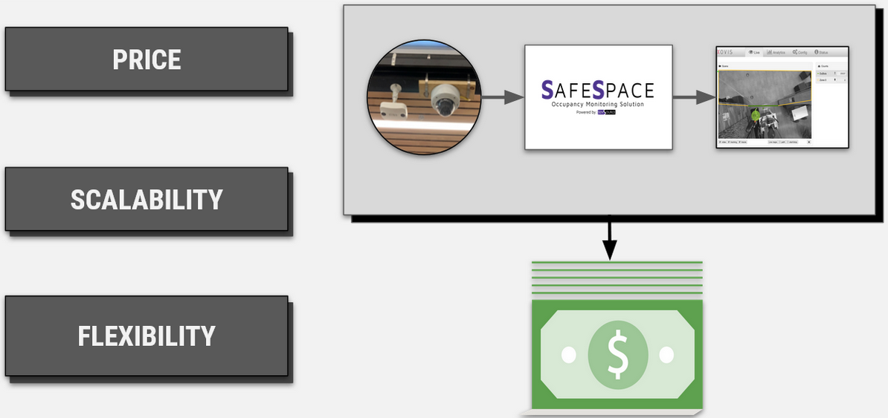
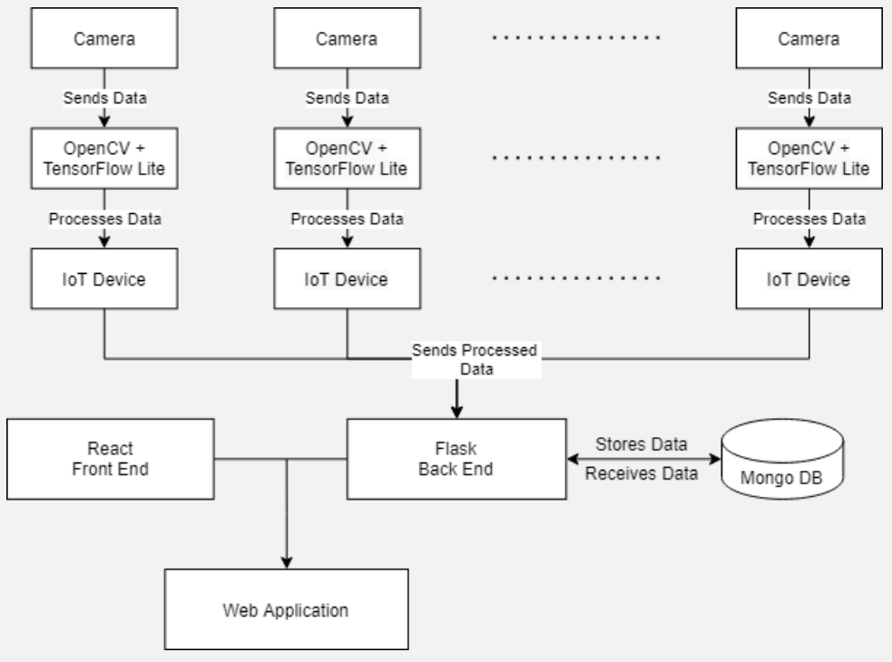
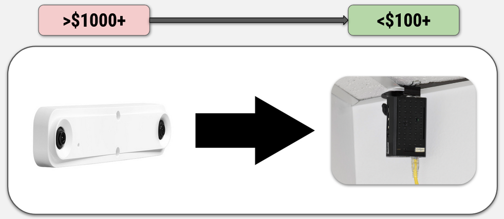

As technology advances and small IoT devices become commonplace in the world around us, the term “smart” has been shifting alongside. The PiWatcher team was tasked with providing Northern Arizona University with an inexpensive, scalable people-counting infrastructure. This infrastructure provides a networked system between IoT devices and a full-stack web application for monitoring room usage across campus. Due to our system being more cost-effective than the one in current use, it can be deployed in larger quantities and provide our client the ability to further his vision of a “smart campus.”
The solution presented by our team encompasses an IoT device used for image processing and counting as well as a full-stack web application with an accompanying database for user interaction and data digest. The IoT device utilizes machine learning to take and process an image, all on the device, and send the number of people recognized within the frame to the web application. The backend portion of our web application handles data insertion after being sent the latest count and data collection when requested from our frontend for display. The role-based account system within the application designates the data viewing permissions on a per-user basis. PiWatcher provides an all-inclusive package for monitoring footfall in a desired location.
Our people detection system employs OpenCV and TensorFlow which run on a Raspberry Pi 4 with a Pi Camera. The web application back end is built with Flask which connects to our database, MongoDB, to store data. On the front end, we use React to provide a modular and responsive analytics dashboard. More information about the technologies we used lies on our documentation page. Our source code and development schedule can be accessed on the resources page of our website.
{kind=link}
{kind=link}
{kind=link}